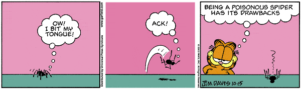
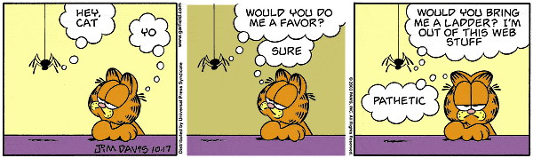

)
)| Feature Article - January 2004 |
| by Do-While Jones |
Could spiders possibly have evolved? If so, from what?
Spiders present several difficulties for the theory of evolution. Let's look at some of them.

Consider the evolution of poison. Evolutionists would have you believe that spiders evolved a substance inside their own bodies that is lethal to other living things, but harmless to themselves. By some amazing stroke of good luck, they also evolved hollow fangs that can inject this poison into their prey. Then, by pure chance, spiders figured out that they could kill things by biting them.
If you can believe that, you can certainly believe that some snakes also evolved poison and fangs, purely by accident. Poison would have had to have evolved independently in spiders and snakes because not even evolutionists believe that they share a close common relative from which they both could have inherited poison.
There are also poisonous amphibians (frogs, for example), which have evolved poison (but not fangs). This is remarkable because the evolution of poison is obviously very dangerous. As Jim Davis' cartoon points out, bad things could happen if you bite your own tongue.
Consider the Venus Flytrap. It secretes digestive juices that break down any unfortunate insect that triggers its spring-loaded leaves, allowing the plant to absorb nutrients from the insect, in much the same way that a spider absorbs the externally digested insects it kills. Plants and spiders certainly don't share a common relative from which both could have inherited the ability to digest insects outside their own bodies.
Speaking of digestion, the acid in our own stomachs is remarkable, too. How did animals evolve the ability to secrete stomach acid which dissolves plant and animal material, but doesn't dissolve itself? (If you happen to suffer from ulcers or indigestion, you know what happens when the system doesn't work exactly right.)

What do you do when you need a fiber stronger than steel? You don't just pull it out of your ..., well, anyplace; but a spider does. Despite what the cartoon says, spiders never seem to run out of that web stuff.|
Weight for weight, spider silk is up to 5 times stronger than steel of the same diameter. It is believed that the harder the spider pulls on the silk as it is produced, the stronger the silk gets. Spider silk is so elastic that it doesn't break even if stretched 2-4 times its length. Spider silk is also waterproof, and doesn't break at temperatures as low as -40C. There are 7 types of silk glands and "nozzles" but no spider has all 7 types. 1 |
|
The seven types of silk glands: Aciniform glands produce silk for wrapping prey, called swathing silk. Most spiders have this. Cylindrical (tubuliform) glands produce silk for wrapping eggs. So males usually don't have them, and some families (Salticidae and Dysderidaei) don't have them at all. Ampullate glands produce non-sticky silk used as draglines or to form the frames of their webs (non-sticky foundations). All spiders have this, to produce the safety lines they leave behind them as they move about. Pyriform glands produce silk made into attachment disks at the bottom of web suspension lines. All families have them. Aggregate glands work like a glue gun, producing sticky droplets, which regularly dot the silk to trap prey. Only three families have them (Araneidae, Theridiidae and Linyphiidae). Lobed glands also produce wrapping silk and [are] found only in Theriididae which have reduced aciniform glands. Cribellar glands produce multi-stranded, slightly sticky silk through many pores which are combed with special hairs on the hind legs as it emerges to form fluffy woolly silk. This is good for catching flying insects because it is very stretchy so the insect doesn't break the strand but bounces back to the web like on a horizontal bungy jump. The woolly silk also snares hairy insect legs. Only Cribellate spiders have these glands and combs. 2 |
There are many fascinating things you can learn about spiders on the Internet. The one thing you can't learn is how they make silk, because nobody knows.
|
Mention silk to a polymer chemist and they will get dreamy eyes. It is a natural fibre [British spelling of "fiber"] to match the best man-made ones, but its production is as eco-friendly as it gets, occurring at ambient temperature and near-ambient pressure, with water as the solvent. How is it done? We don't know. Why is it so tough? We don't know. Actually, what is silk, exactly? We don't know. So there's lots of scope for research, then. 3 |
Here's what we do know:
|
Silk proteins - known as silk fibroins - are stored in the glands of insects and spiders as an aqueous solution. During the spinning process, by which fibres are produced from this silk 'dope', the concentration of silk in the solution is gradually increased, and finally elongational stress is applied to produce a partly crystalline, insoluble fibrous thread in which the bulk of the polymer chains in the crystalline regions are oriented parallel to the fibre axis. It is known that silk fibroin consists of both hydrophilic and hydrophobic regions - it is a block-like polymeric system. But what scientists are still not sure about is how this complex silk protein can be maintained in a concentrated silk dope without fear of irreversible precipitation or crystallization, potentially blocking the whole spinning device. It is understood that the water is acting as a plasticizing agent, keeping the protein malleable, but the nature of the silk itself in this environment remains largely unknown. Nor is it known how the protein changes in structure, texture or morphology with increasing concentration, finally emerging, after the final stages of elongational stress, as an insoluble fibre. 4 |
Scientists, despite their best efforts, haven't been able to figure out how spiders make silk. Yet, according to evolutionists, spiders figured out how to make it by dumb luck.
Scientists would like to duplicate the process so that they could make artificial spider silk for a wide range of commercial applications.
|
Spider silk has a lot of advantages, but as the Nexia page notes, isn't used very much because it's a bit hard to effectively manage spiders in large enough numbers to get decent yields. 5 |
Since goats are easier to manage than spiders, Nexia Biotechnologies decided to create genetically modified goats that produce spider silk.
|
Scientists at Nexia Biotechnologies in Montreal have ... bred dairy goats with a spider in order to produce a unique protein. This protein will be extracted from the milk to produce silk fibers, called BioSteel, for bulletproof vests, medical supplies and space equipment. ... These silk fibers are composed of proteins that are produced in the spider's silk glands, which are anatomically similar to a goat's mammary glands. In both glands, epithelial cells manufacture and secrete water-soluble, complex proteins in large amounts. Nexia took this research and applied it to dairy goats by injecting a spider gene into a goat's one-cell egg before it was fertilized. This spider gene then becomes just one of 70,000 genes in a goat's body. In adult female goats, the spider gene is activated during lactation and turns off when the animal is finished lactating. The result is that one goat can produce five grams of silk proteins per liter and can produce up to a liter and [a] half per day. 6 |
Let's be clear on this. The goats don't actually make silk. They make milk which contains proteins which can be processed to make silk.
There are several points that are important to discuss as they pertain to evolution.
First, you can't mate a goat with a spider to get a goat that spins silk. Goats and spiders have never been know to mate in nature. (However, evolutionists might use their standard argument that just because nobody has ever observed it, that doesn't mean it has never happened. )
The genetically altered goats were designed, on purpose, using a technique that does not occur in nature. Specifically, someone had to physically transfer a spider gene into a goat's unfertilized egg.
The existence of goats that produce spider silk is evidence of intentional design, not natural unguided evolution.
Even with the transfer of the spider gene, the goats do not produce silk. They cannot spin webs. It takes more than the single gene to produce silk.
Suppose that the genetically altered goats did produce spider silk instead of milk. Would the goat know what to do with the silk? We doubt it. What would make a goat to leap from branch to branch, leaving a stream of silk behind? The spider gene didn't come with an instruction manual. So, even if a chance mutation caused a goat to produce silk instead of milk, it would not be of any use to the goat.
Furthermore, if a goat produced silk instead of milk, what would it feed its offspring? Its kids would suck the silk out of the mothers teat, and choke on it. The offspring would all die in infancy, so the silk-producing ability would die out when the mutant mother goat died.
We could not find anything on the Nexia Biotechnologies web page about how they feed the offspring of the genetically altered goats. Perhaps there is so little spider silk protein in the milk that the kids can survive on it. But we rather suspect that the kids are fed normal goats' milk, if for no other reason than that the genetically modified milk is too valuable for use in making BioSteel TM to use feeding kids, when normal milk would work as well.
The problems that would arise if a goat naturally started producing silk illustrate the difficulties that would have occurred in spider evolution.
The spider would have needed to get the genes for producing the seven different kinds of silk from somewhere. It is unscientific to believe that these genes would arise from pure chance.
Furthermore, even if the genes did arise from chance, and the spider could produce silk, the spider would not know what to do with the silk. It would never occur to a spider to spin a web, or make an egg sack, or use the silk as a sail to go great distances.
Spiders know what to do with silk by instinct. Instinct was one of the things that Darwin admitted his theory could not explain. Nobody else has been able to explain it either.
Which brings up another issue. Have you ever tried to squash a spider, cockroach, or any other kind of bug? Don't they generally try to run away before you swat them?
How do they know to do that? They don't learn it in school, or on their mother's knee. Bugs don't tell other bugs to look out for the rolled up newspaper.
They can't learn by experience. The second time someone tried to swat them, they would know to run. But they would not have that experience the first time; so they would not run the first time; therefore they would never get a second chance to use that experiential knowledge. Bugs know instinctively what you are going to do with the newspaper, and what they need to do to keep you from doing it.
Poison, silk, and instinct, are just three things about spiders that don't make sense from an evolutionary point of view.
Poison and silk are the results of irreducible complexity, which (not coincidentally) is what Eddy asked us about in this month's email column.
| Quick links to | |||
|---|---|---|---|
| Science Against Evolution Home Page |
Back issues of Disclosure (our newsletter) |
Web Site of the Month |
Topical Index |
Footnotes:
1
http://www.szgdocent.org/ff/f-ssilk.htm
2
ibid.
3
Nature, Vol. 426, 13 November 2003, "Web masters" pages 121 - 122
4
Atkins, Nature, Vol. 424, 28 August 2003, "Silk's secrets", page 1010
5
http://brian.carnell.com/articles/2001/02/000018.html
6
http://www.howstuffworks.com/news-item38.htm